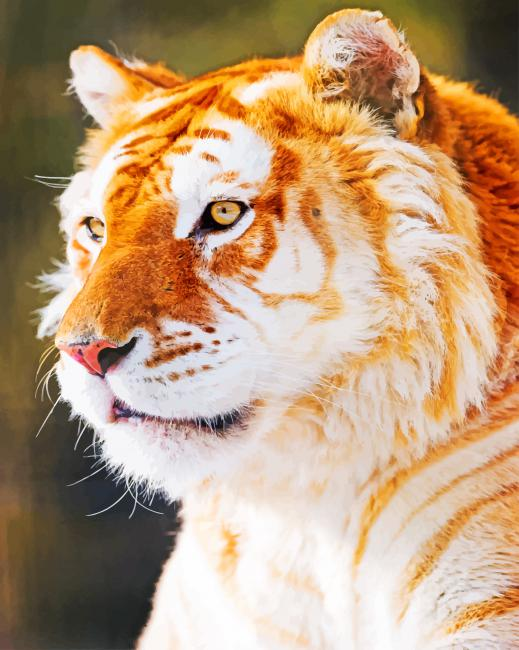
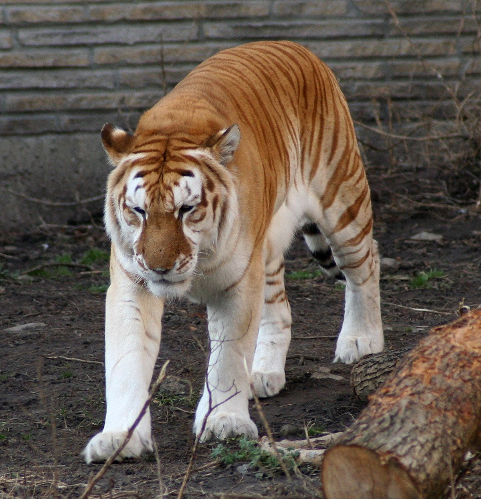
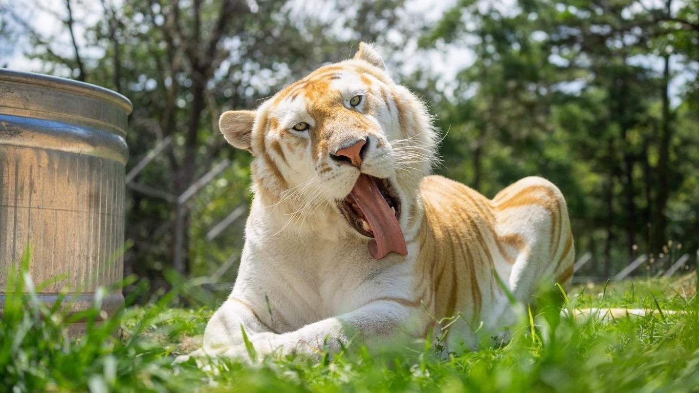
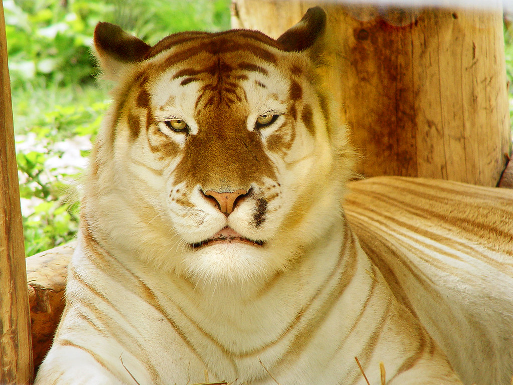
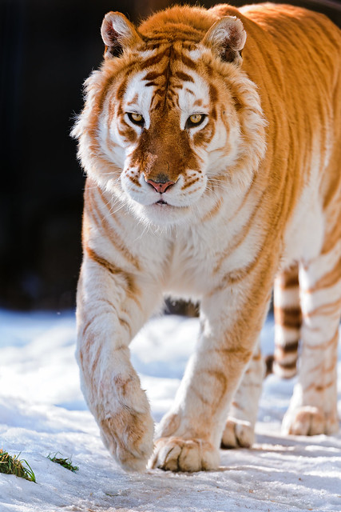

A golden tiger, sometimes called a golden tabby tiger, is a tiger with a colour variation caused by a recessive gene. Like white tigers and black tigers, it is a colour form and not a separate subspecies. Known for its blonde or pale-golden color and red-brown (not black) stripes, the golden tiger colouring comes from a recessive trait referred to as "wideband" which affects the production of black during the hair growth cycle.Tiger colorations that vary from the typical orange-with-black-stripe do occur in nature, but in a very small percentage.

All golden tabby tigers in captivity seem traceable to a white tiger called Bhim, a white son of a part-white Amur tiger named Tony. Tony is considered to be a common ancestor of all white tigers in North America. Bhim was a carrier of the wide band gene and transmitted this to some of his offspring. Bhim was bred to his sister Sumita (also a carrier of the wide band gene), giving rise to stripeless white tigers (i.e. having two copies of the wide band gene).

Bhim was also bred to a normal orange tigress called Kimanthi, and then to his own orange daughter Indira from that mating. The mating of Bhim and Indira resulted in striped white, stripeless white, normal orange, and golden tabby offspring indicating that both Bhim and his daughter carried the wide band gene. When the golden tabby male offspring was mated to the normal orange female offspring, both golden tabby tigers and white tigers resulted.

Litters of different coloured cubs are not unusual because the white and golden tabby colours are caused by combinations of hidden recessive genes carried by the parents. White tigers, such as Dreamworld's Mohan (named after the white tiger captured in India in the 1950s), are highly inbred. Inbreeding reduces genetic variability and may cause hidden genes to manifest as there is a greater probability that two recessive genes will meet up.

Analysis of golden tiger family trees shows that golden tigers are genetically normal orange coloured tigers with the addition of a recessive modifying gene, probably the wide band gene. This same wide band gene also gives rise to stripeless white tigers. A white tiger that inherits two copies of the recessive wide band gene will be a stripeless white. A normal orange tiger that inherits two copies of the recessive wide band gene will be a golden tabby. The wide band gene is carried independently of the white gene.

Though not technically a species in its own right, the beautiful Golden Tabby Tiger currently lists as the third rarest creature on earth. With almost absolute certainty, no survivors exist in the wild and only 30 in captivity. This animal does not technically qualify as a separate species.